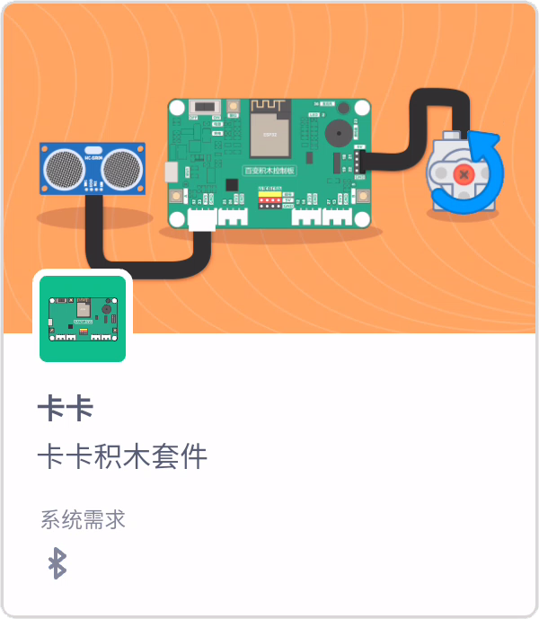

卡卡积木块介绍¶
{kind=link}
映射¶

积木用途：将数值从一个范围映射到另一个范围。
积木参数：使用该积木需要设置五个参数，其中第一个参数表示需要进行映射的数值，而第二和第三个参数则代表了映射前数值的范围，第四和第五个参数则表示了映射后数值的范围。
电位器¶

积木用途：获取连接在指定引脚的电位器的数值。对于本套件，范围是0-4095。
积木参数：本积木有一个参数，用于指定电位器所在引脚。
光线传感器¶

积木用途：获取连接在指定引脚的光线传感器的数值。对于本套件，范围是0-4095。
积木参数：本积木有一个参数，用于指定光线传感器所在引脚。
声音强度判断¶

积木用途：当声音强度满足一定条件，执行积木下方的代码。
积木参数：本积木有两个参数，第一个参数用于指定比较运算符号，第二个参数用于指定贩毒案数值。
声音强度数值¶

积木用途：获取百变积木控制板上板载麦克风读取到的声音强度大小，范围是0-100。
积木参数：无。
当按下按键¶

积木用途：当按下百变积木控制板上的指定按键时，执行积木下方的的代码。
积木参数：本积木有一个参数，用于指定按键。
按键状态¶

积木用途：获取指定按键按下的状态。按键按下为 ture,否则为 false。
积木参数：本积木有一个参数，用于指定电位器所在引脚。
蜂鸣器 播放音符¶

积木用途：在百变积木控制板上的蜂鸣器播放音符。
积木参数：本积木有两个参数，第一个参数用于指定音符，第二个参数用于指定声音的持续时长。
蜂鸣器 停止播放¶

积木用途：停止蜂鸣器播放音符。
积木参数：无。
超声波传感器¶

积木用途：获取连接在指定引脚的超声波传感器的数值。对于本套件，范围是0-4095，单位是厘米。
积木参数：本积木有一个参数，用于指定超声波传感器所在引脚。
四位数码管显示¶

积木用途：将指定的数字显示在连接到指定引脚的四位数码管上。
积木参数：本积木有两个参数，第一个参数用于指定四位数码管所在引脚，第二个参数用于指定要显示的数字。
颜色传感器¶

积木用途：获取连接在指定引脚的颜色传感器的数值。可检测的颜色有：蓝色、红色、橙色、黄色和绿色。
积木参数：本积木有一个参数，用于指定颜色传感器所在引脚。
电机¶

积木用途：控制连接在指定引脚的电机开启和关闭。
积木参数：本积木有两个参数，第一个参数用于指定电机连接的引脚，第二个参数用于控制电机的开启关闭。
舵机¶

积木用途：设置连接在指定引脚的舵机转动到指定角度，角度范围是0-180。
积木参数：本积木有两个参数，第一个参数用于指定舵机连接的引脚，第二个参数是舵机的角度。
机械组电机¶

积木用途：设置连接在指定引脚的机械组电机以指定速度转动，速度范围是0-100。
积木参数：本积木有两个参数，第一个参数用于指定机械组电机连接的引脚，第二个参数是机械组电机的速度。